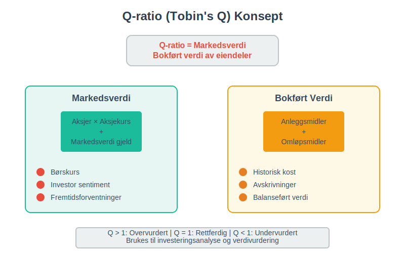
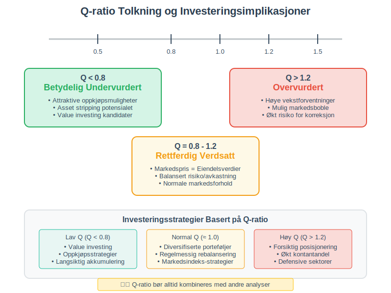
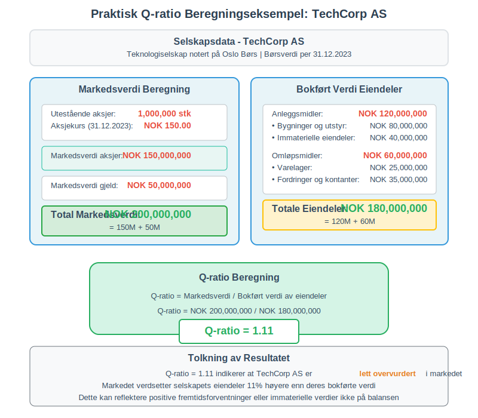
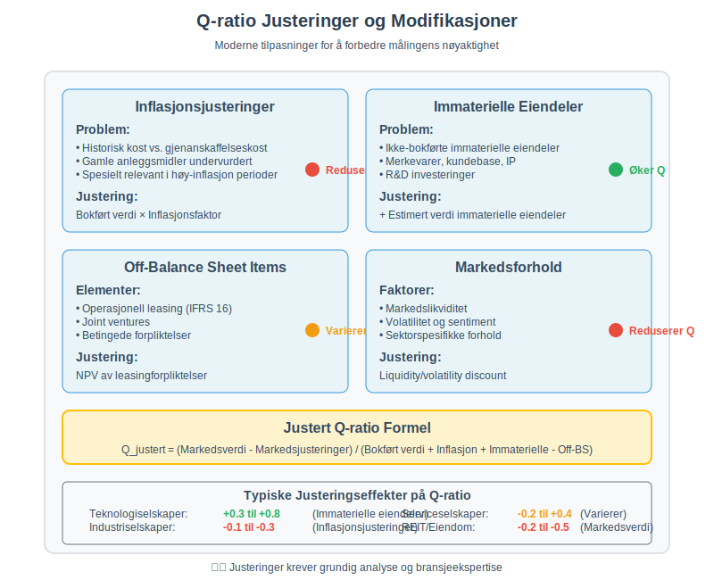
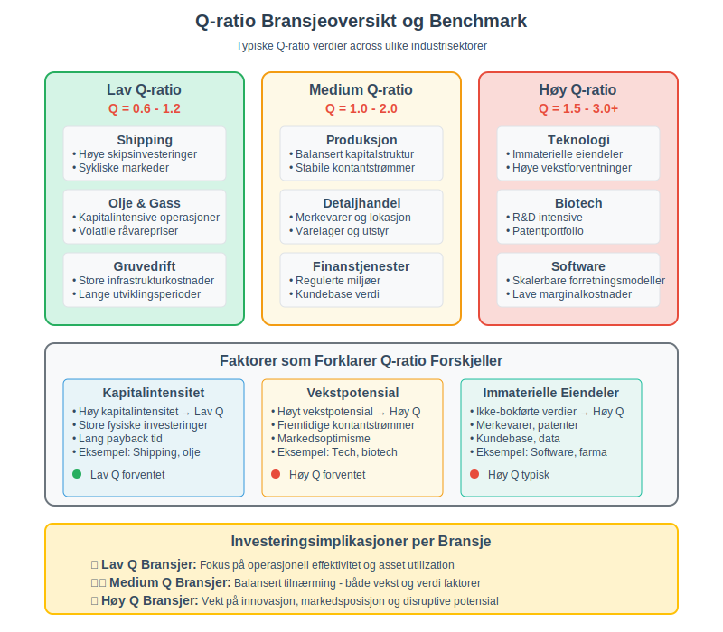
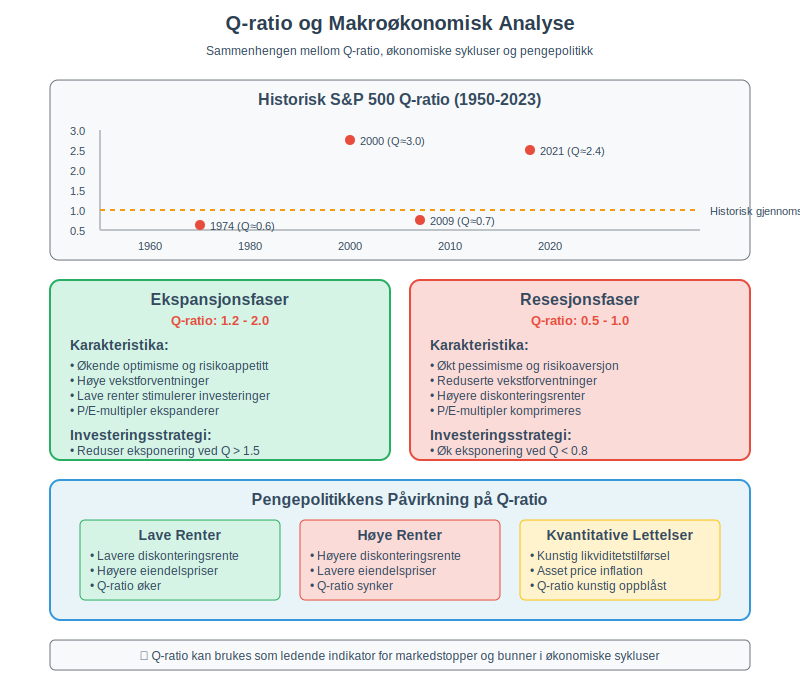
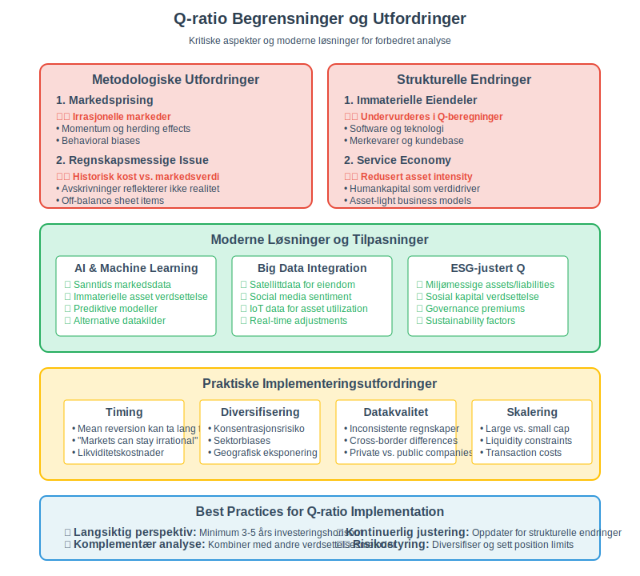
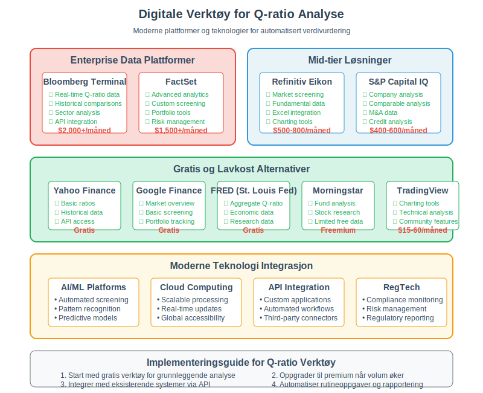

Q-ratio, også kjent som Tobin’s Q, er et av de mest verdifulle verktøyene innen finansiell analyse og verdivurdering. Dette nøkkeltallet sammenligner et selskaps markedsverdi med den bokførte verdien av dets eiendeler, og gir viktig innsikt i om selskapet er over- eller undervurdert i markedet. Utviklet av den nobelprisvinnende økonomen James Tobin, har dette målet blitt et fundamentalt verktøy for investorer, analytikere og ledelse.
Seksjon 1: Q-ratioens Grunnleggende Konsept
Q-ratio uttrykker forholdet mellom markedsverdien av et selskap og gjenanskaffelseskostnaden av dets fysiske eiendeler. Den grunnleggende formelen er:
Q-ratio = Markedsverdi av selskapet / Bokført verdi av eiendeler

1.1 Teoretisk Fundament
James Tobin introduserte dette konseptet i 1969 med følgende logikk:
- Hvis Q > 1: Selskapet er overvurdert - markedet verdsetter selskapets eiendeler høyere enn hva det ville koste å erstatte dem
- Hvis Q < 1: Selskapet er undervurdert - det ville være billigere å kjøpe selskapet enn å bygge opp tilsvarende eiendeler fra bunnen av
- Hvis Q = 1: Selskapet er rettferdig verdsatt - markedsverdien reflekterer den reelle verdien av eiendelene
1.2 Q-ratioens Praktiske Betydning
Q-ratio fungerer som en verdimåler som hjelper til med:
- Identifisering av investerings- og oppkjøpsmuligheter
- Vurdering av selskapets strategiske posisjoner
- Analyse av markedseffektivitet og bobler
- Beslutninger om kapitalallokering

Seksjon 2: Detaljert Beregning av Q-ratio
2.1 Beregning av Markedsverdi
Markedsverdien av selskapet beregnes som:
Markedsverdi = (Antall aksjer × Aksjekurs) + Markedsverdi av gjeld
For børsnoterte selskaper:
- Aksjenes markedsverdi: Antall utestående aksjer multiplisert med gjeldende aksjekurs
- Gjeldens markedsverdi: For likvide obligasjoner brukes markedspris, for annen gjeld brukes ofte bokført verdi
2.2 Beregning av Bokført Verdi av Eiendeler
Den bokførte verdien av eiendeler hentes fra balansen og inkluderer:
| Eiendelstype | Inkludert i Q-ratio | Kommentarer |
|---|---|---|
| Anleggsmidler | ✓ | Bygninger, maskiner, utstyr |
| Immaterielle eiendeler | ✓ | Patenter, varemerker, goodwill |
| Varelager | ✓ | Råvarer, ferdigvarer |
| Fordringer | ✓ | Kundefordringer, andre fordringer |
| Kontanter | ✓ | Bankinnskudd, likvide midler |
2.3 Praktisk Beregningseksempel
La oss se på et praktisk eksempel for selskapet “TechCorp AS”:
Markedsdata:
- Antall utestående aksjer: 1.000.000
- Aksjekurs: NOK 150
- Markedsverdi gjeld: NOK 50.000.000
Balansedata:
- Totale eiendeler: NOK 180.000.000
Beregning:
- Markedsverdi aksjer: 1.000.000 × NOK 150 = NOK 150.000.000
- Total markedsverdi: NOK 150.000.000 + NOK 50.000.000 = NOK 200.000.000
- Q-ratio = NOK 200.000.000 / NOK 180.000.000 = 1,11
Dette indikerer at selskapet er lett overvurdert i markedet.

Seksjon 3: Q-ratioens Varianter og Justeringer
3.1 Simple Q vs. Marginal Q
Simple Q (som vi har diskutert):
- Bruker total markedsverdi og total eiendelsverdi
- Enklere å beregne og mest brukt i praksis
Marginal Q:
- Fokuserer på verdiskapning av nye investeringer
- Teoretisk mer korrekt, men vanskelig å beregne
3.2 Justert Q-ratio
Moderne analytikere foretar ofte justeringer for:
Immaterielle Eiendeler
- Mange selskaper har betydelige immaterielle eiendeler som ikke er fullstendig reflektert i balansen
- F.eks. merkevare, kundebase, proprietary teknologi
Inflasjonsjusteringer
- Historisk kost vs. gjenanskaffelseskost
- Spesielt relevant for selskaper med gamle anleggsmidler
| Justeringstype | Påvirkning på Q | Når relevant |
|---|---|---|
| Inflasjonsjustering | Reduserer Q | Høy inflasjon, gamle eiendeler |
| Immaterielle eiendeler | Øker Q | Teknologi-, service-selskaper |
| Off-balance sheet items | Varierer | Operasjonell leasing, JV |

Seksjon 4: Tolkning og Analyse av Q-ratio
4.1 Q-ratio Nivåer og Betydning
Q > 1,5: Betydelig overvurdert
- Kan indikere markedsboble eller ekstraordinære vekstforventninger
- Risiko for kurskorreksjon
- Mulighet for å selge eiendeler med fortjeneste
Q = 1,2-1,5: Moderat overvurdert
- Normale forhold for vekstselskaper
- Markedet priser inn fremtidig verdiskapning
- Fortsatt rom for verdistigning
Q = 0,8-1,2: Rettferdig verdsatt
- Markedspris reflekterer eiendelenes reelle verdi
- Balansert risiko/avkastning-profil
Q < 0,8: Undervurdert
- Potensielle oppkjøpskandidater
- Mulighet for aktivistinvestorer
- Asset stripping kan være lønnsomt
4.2 Bransjespesifikke Faktorer
Q-ratio må tolkes i bransjekontekst:
Kapitalintensive Bransjer (Q = 0,6-1,2)
- Olje & gass, gruvedrift, shipping
- Høye infrastrukturinvesteringer
- Sykliske markedsforhold
Teknologibransjer (Q = 1,5-3,0)
- Software, biotech, fintech
- Høy andel immaterielle eiendeler
- Vekstpremium i markedet
Servicebransjer (Q = 1,0-2,0)
- Konsulentvirksomhet, finans
- Lav eiendelsintensitet
- Humankapital som verdidriver

Seksjon 5: Q-ratio som Investeringsstrategi
5.1 Value Investing med Q-ratio
Benjamin Graham og Warren Buffett har brukt Q-lignende prinsipper:
- “Cigar butt” investeringer: Selskaper som handles under eiendelsverdien
- Asset play: Kjøp selskaper med Q < 1 for å realisere skjult verdi
- Margin of safety: Q-ratio som risikojustering
5.2 Oppkjøpsstrategier
Q-ratio brukes aktivt i M&A-analyser:
Strategiske Oppkjøp
- Kjøp av konkurrenter med Q < 1
- Synergieffekter kan øke verdien
- Konsolidering av fragmenterte bransjer
Finansielle Oppkjøp (Private Equity)
- Leveraged buyouts av undervurderte selskaper
- Eiendelsalg for å finansiere oppkjøpet
- Operasjonelle forbedringer for verdiskaping
| Q-ratio Range | Oppkjøpsstrategi | Forventet Avkastning |
|---|---|---|
| Q < 0,6 | Asset stripping | 15-25% |
| Q = 0,6-0,8 | Operasjonell forbedring | 10-18% |
| Q = 0,8-1,0 | Strategiske synergi | 8-15% |
| Q > 1,0 | Premium for kontroll | 5-12% |
5.3 Porteføljekonstruksjon
Akademisk forskning viser at Q-baserte strategier kan gi meravkastning:
- Lav-Q porteføljer har historisk outperformed høy-Q porteføljer
- Mean reversion: Q-ratioer tenderer mot 1 over tid
- Risikojustert avkastning er ofte bedre for lav-Q strategier

Seksjon 6: Q-ratio og Makroøkonomisk Analyse
6.1 Markedsverdsettelse
Q-ratio brukes til å vurdere hele markeders verdsettelse:
USA S&P 500 Q-ratio:
- Historisk gjennomsnitt: ~1,0
- Toppnivåer (2000, 2021): >2,0
- Bunnivåer (1974, 2009): <0,6
6.2 Økonomiske Sykluser
Q-ratio følger økonomiske sykluser:
Ekspansjonsfaser
- Q-ratio stiger over 1
- Optimisme og høye vekstforventninger
- Kapitalallokering til nye investeringer
Resesjonsfaser
- Q-ratio faller under 1
- Pessimisme og reduserte vekstforventninger
- Verdiskapningsmuligheter for langsiktige investorer
6.3 Pengepolitikk og Q-ratio
Sentralbankpolitikk påvirker Q-ratio gjennom:
- Lave renter: Øker Q-ratio (lavere diskonteringsrente)
- Høye renter: Reduserer Q-ratio (høyere diskonteringsrente)
- Kvantitative lettelser: Kunstig oppblåst Q-ratio

Seksjon 7: Begrensninger og Kritikk av Q-ratio
7.1 Metodologiske Utfordringer
Markedspriseffektivitet
- Irrasjonelle markeder kan gi feilaktige Q-ratioer
- Momentum og trendeffekter påvirker verdier
- Likviditetspremier i små markeder
Regnskapsmessige Begrensninger
- Historisk kost vs. markedsverdi av eiendeler
- Avskrivninger reflekterer ikke alltid reell verdireduksjon
- Off-balance sheet items ikke inkludert
7.2 Strukturelle Endringer i Økonomien
Immaterielle Eiendeler
Moderne økonomi er dominert av immaterielle eiendeler:
- Software og teknologi
- Merkevarer og kundebase
- Forskning og utvikling
- Organisasjonskapital
Disse undervurderes ofte i tradisjonelle Q-ratio beregninger.
Servicetunge Økonomier
- Redusert eiendelsintensitet
- Humankapital som hovedverdidriver
- Sharing economy og asset-light modeller
7.3 Timing og Implementering
| Utfordring | Løsning | Implementering |
|---|---|---|
| Markedstiming | Langsiktig perspektiv | 3-5 års horisont |
| Likviditetskostnader | Gradvis posisjonering | Dollar cost averaging |
| Konsentrasjonsrisiko | Diversifisering | Sektorspredning |

Seksjon 8: Q-ratio i Praksis: Case Studies
8.1 Case 1: Japanske Boble (1989)
Situasjon:
- Nikkei Q-ratio på ~4,0
- Ekstrem overvurdering av eiendom og aksjer
Resultat:
- 80% kursfall over neste tiår
- Mean reversion til Q ≈ 1,0
8.2 Case 2: Dotcom-boblen (2000)
Teknologisektoren:
- Q-ratioer på 10-50 for vekstselskaper
- Irrasjonell optimisme om internett-ødegard
Lærdom:
- Selv immaterielle eiendeler har grenser
- Fundamentalanalyse bør komplettere Q-ratio
8.3 Case 3: Finanskrisen (2008-2009)
Banksektoren:
- Q-ratioer under 0,5
- Markedet priset inn systemrisiko
Opportuniteter:
- Langsiktige investorer som kjøpte ved Q < 0,6 så betydelig avkastning
Seksjon 9: Moderne Anvendelser og Digitale Verktøy
9.1 Automatiserte Q-ratio Beregninger
Finansielle databaser tilbyr sanntids Q-ratio data:
- Bloomberg Terminal
- FactSet
- Thomson Reuters Eikon
- Gratis alternativer: Yahoo Finance, Google Finance
9.2 Integrering med Moderne Porteføljeteori
Q-ratio kombineres med:
- Faktormodeller (størrelse, verdi, kvalitet)
- ESG-kriterier for bærekraftig investering
- Algoritmisk handel og kvantitative strategier
9.3 RegTech og Compliance
Regulatorisk rapportering bruker Q-ratio for:
- Systemrisiko-overvåking
- Makroprudensielle tiltak
- Boble-deteksjon i finansmarkeder

Seksjon 10: Fremtiden for Q-ratio
10.1 Evolusjon i Beregningsmetoder
Kunstig intelligens og maskinlæring brukes til:
- Forbedret verdsettelse av immaterielle eiendeler
- Sanntids justering for markedsforhold
- Prediktive modeller for Q-ratio utvikling
10.2 Alternative Datakilder
Big data utvider Q-ratio grunnlaget:
- Satellittdata for eiendomsverdier
- Social media sentiment for merkeverdier
- IoT-data for anleggsmiddel utnyttelse
10.3 ESG-justert Q-ratio
Bærekraftige investeringer krever utvidede målinger:
- Miljømessige eiendeler og forpliktelser
- Sosial kapital og omdømme
- Governance-premiums i verdsettelsen
Konklusjon
Q-ratio (Tobin’s Q) forblir et av de mest verdifulle verktøyene for finansiell analyse og verdivurdering. Ved å sammenligne markedsverdi med eiendelsverdier, gir det viktig innsikt i markedseffektivitet, investeringsmuligheter og økonomiske sykluser.
Nøkkelinnsikter:
- Langsiktig perspektiv: Q-ratio fungerer best over lengre tidshorisonter
- Bransjekontekst: Tolkning må skje i relevant bransjekontekst
- Komplementær analyse: Bør kombineres med andre finansielle nøkkeltall
- Strukturell evolusjon: Metoden må tilpasses moderne økonomi
Praktisk anvendelse:
For investorer, analytikere og bedriftsledere er Q-ratio et kraftfullt verktøy for:
- Identifisering av over- og undervurderte muligheter
- Porteføljekonstruksjon med langsiktig fokus
- Risikostyring gjennom markedssyklusene
- Strategisk planlegging av kapitalallokering
Som økonomen James Tobin selv påpekte, representerer Q-ratio et fundamentalt prinsipp i finansiell økonomi: på lang sikt vil markedskrefter drive verdier mot deres grunnleggende, økonomiske fundament. Ved å forstå og anvende dette prinsippet kan investorer og bedriftsledere ta mer informerte beslutninger i et stadig mer komplekst finansielt landskap.
Q-ratio er ikke bare et nøkkeltall - det er en filosofi om verdivurdering som setter fokus på den grunnleggende sammenhengen mellom reelle eiendeler og markedsprising. I en tid preget av volatile markeder og raske strukturelle endringer, forblir dette perspektivet mer relevant enn noensinne.